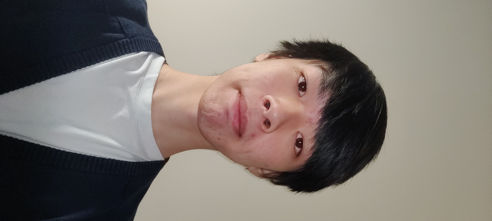

My name is Markus Lu, I am born in Vancouver of British Columbia and moved to Richmond when I was still in elementary. I am currently 18 years old and I graduated from high school in June 2020 before proceeding to go to BCIT for the fall 2020 term for the CIT Program. I'm not much of a talker when it comes to strangers but can get pretty annoying with those I'm familiar with. I like taking walks in the park and enjoying the beautiful green scenary, I like playing badminton because I'm terrible at every other sport.
Here's an interesting yet boring story about me, when I was around the age of 6, I was looking out through the window as my cousin wwas walking home after school had ended. She was waving at me and I stared back gleefully. When she turned the corner however, I tried sticking my head out the window to get a better view and...
I had fallen out of the second floor window.
Lucky I had fallen onto the window bug screen which had fallen with me and LUCKY I didn't fall head first into the tall wooden fence that was basically one arm length away from the window I had just fallen from. After I got up, I made my way to the front door of the house but I couldn't reach the door bell, so I went back to where I had fallen, picked up the window bug screen, and used that to push the door bell for me. My grandparents were shocked, I was covered in blood, they called my parents, I went to the hospital lucky I came out unscathed except for a couple of injuries, no permnanet ones... I think
